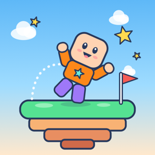

Tumbleland
Jump, Build & Play Offline
Support
Tumbleland is a bright 3D game for iPhone and iPad. Run and jump through six obstacle courses, collect stars, dress up your Cubeling, and build your own courses in the Workshop. It is single-player and works completely offline: no ads, no chat, no accounts and no purchases.
Need help? Write to bogdan.iliescu2@icloud.com. We usually answer within a few days.
How do I reset the game or delete built courses?
Open Settings (the gear on the title screen, or in the pause menu) and go to Parent Corner. There you can reset progress or delete all built courses.
I forgot the Parent Corner PIN.
The PIN can't be recovered, because it is never stored in readable form. Delete Tumbleland and install it again from the App Store. This also deletes the game progress and the built courses.
Does Tumbleland need the internet?
No. Everything works in airplane mode. The game never connects to the internet.
Can other people see the courses I build?
No. Courses stay on your device and can't be shared, so there is no contact with strangers.
Will my progress move to a new iPhone or iPad?
Yes, if you restore the new device from a backup of the old one (for example iCloud Backup). Tumbleland has no accounts, so there is no other way to copy progress.
Are there time limits for kids?
In the Parent Corner you can see today's play time and turn on a gentle break reminder. For hard limits, use Screen Time in the device's Settings.
Some courses are too hard.
Settings has helpers: gentle speed, extra jump time, and a skip button that appears after a few tries (a skipped run earns no medal).